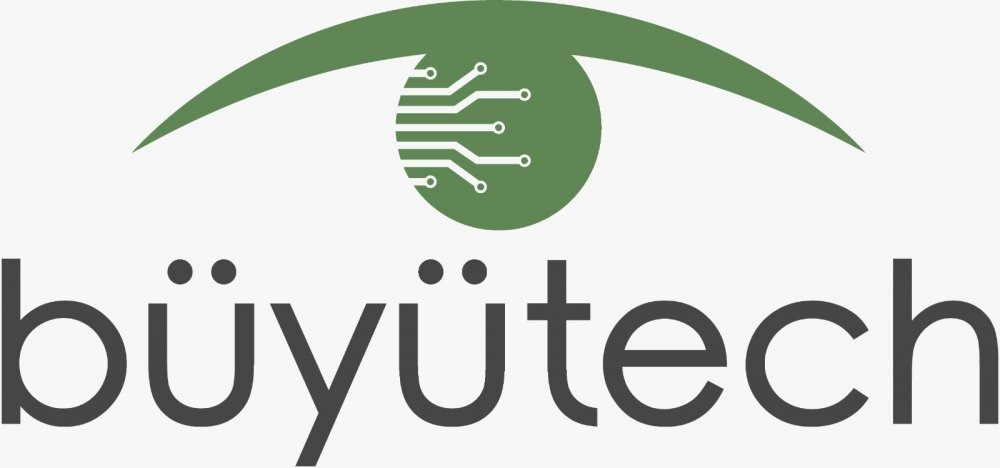
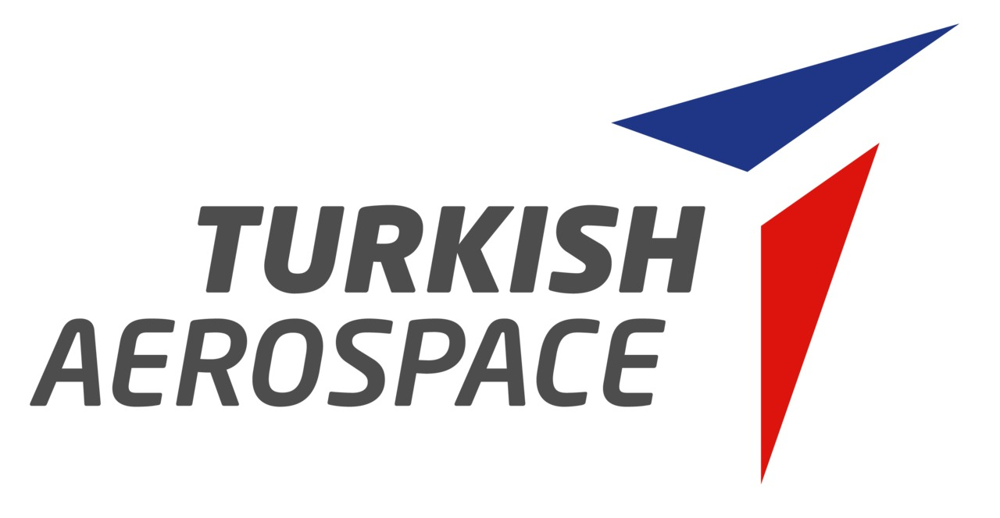
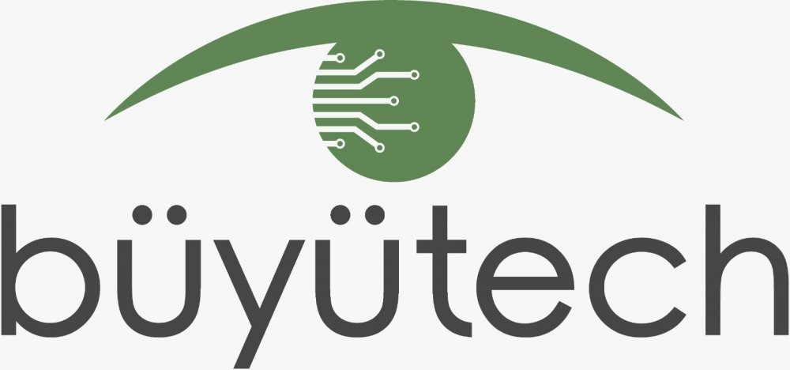
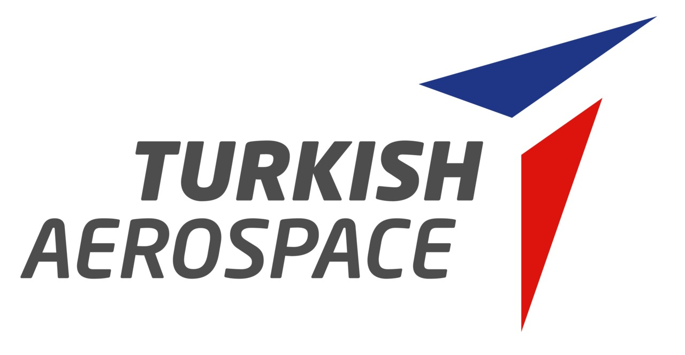
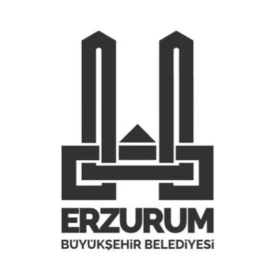
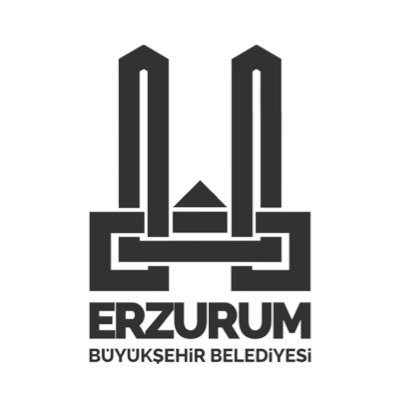

ERZURUM'UN
EN BÜYÜK
YAPAY ZEKA ZİRVESİ
YAPAY ZEKA ZİRVESİ
17-18 MAYIS
2025
15 TEMMUZ MİLLİ İRADE SALONU
Atatürk Üniversitesi

YAPAY ZEKA ZİRVESİ
2025
15 TEMMUZ MİLLİ İRADE SALONU
Atatürk Üniversitesi
Geleceğin teknolojilerine adım at, ilham veren konuşmalarla tanış. Sınırlı kontenjan, yerini ayırt!

Erzurum, yapay zekânın yenilikçi dünyasını kucaklamaya hazırlanıyor! Genç girişimciler,
teknoloji meraklıları ve geleceğin teknoloji liderleri, bu zirvede bir araya geliyor.İlham veren
konuşmalar, etkileşimli oturumlar ve çığır açan fikirlerle dolu bu özel etkinlik, katılımcılarına
unutulmaz bir deneyim sunacak.
Bu eşsiz organizasyon, Atatürk Üniversitesi çatısı altında faaliyet gösteren Yapay Zeka ve
Teknoloji Topluluğu tarafından düzenlenmektedir. Geleceğin teknolojilerini konuşmak ve birlikte
inşa etmek için seni de bu heyecana ortak olmaya davet ediyoruz!
Etkinlik, katılımcılara yalnızca teorik bilgi sunmakla kalmayıp, uygulamalı atölye çalışmaları, panel oturumları ve deneyimsel
etkinliklerle pratik bilgiye erişim imkânı tanımayı; yerli ve milli yapay zekâ çözümlerinin tanıtımına, iş birliklerinin doğmasına ve
girişimcilik kültürünün yaygınlaştırılmasına katkı sunmayı hedeflemektedir.
Zirve organizasyonu, Atatürk Üniversitesi bünyesinde faaliyet gösteren Yapay Zeka ve Teknoloji Topluluğu öncülüğünde,
akademik bir derinlikle ve toplumsal sorumluluk bilinciyle hayata geçirilmektedir.
Senior AI Research Engineer
HAVELSAN
Alperen Enes Bayar, bilgisayarla görme ve yapay zeka alanlarında çalışan bir araştırmacıdır. Yüksek lisansını tamamlamış, doktora eğitimine devam etmektedir. Huawei ve Havelsan gibi kurumsal şirketlerin yanı sıra Visea ve Sytonym gibi girişimlerde de görev alarak farklı ölçeklerde deneyim kazanmıştır. Çalışmaları, stereo vision gibi geleneksel yöntemlerden, güncel büyük dil modeli tabanlı görsel algı sistemlerine kadar geniş bir alanı kapsamaktadır.
Consult Data Analyst
IBTECH
2007 yılında yıldız teknik üniversitesi matematik mühendisliğinden mezun olduktan sonra 2 sene garanti emeklilik şirketinde çalıştı. Dış arama yapan ekibin arama listeleri ve bu aramaların başarılarının raporlamasinda calisti. 2009'da Denizbank'ta risk yönetimi ekibinde kredi risk modelleri üzerinde çalıştı. Sonrasında 2011 senesinde ibtech firmasında banka karlılığı segmentasyon müşteri risk modelleri, yönetim raporlamalari ve son olarak yasal raporlamalarin otomatisazyonunda görev almaktadır.
Software Engineer
ASELSAN
Hacettepe Üniversitesi Bilgisayar Mühendisliği bölümünden Şeref Öğrencisi olarak mezun oldu. Çalışmalarına Aselsan bünyesinde Yazılım Tasarım Mühendisi olarak devam etmektedir.
Artificial Intelligence Engineer
HAVELSAN
Halil İbrahim Hatun, Bilgisayar Mühendisliğinden mezun olmuştur ve yaklaşık üç yıldır yapay zeka alanında çalışmaktadır. Özellikle üretken yapay zeka teknolojilerine yoğunlaşmış durumdadır. Bunun yanı sıra satış ve pazarlama konularına da büyük bir ilgi duyuyor. Şu anda HAVELSAN'da, MAIN Yapay Zeka ekibinde yapay zeka mühendisi olarak görev yapmaktadır. İş hayatının dışında, gitar çalmak ve spor yapmak da en keyif aldığı hobileri arasında yer alıyor.
Head Of Digital Transformation
GÜRİŞ
Güven Orkun Tanık, ODTÜ Bilgisayar Mühendisliği ve Elektronik Elektronik Mühendisliklerinden mezun olmuş, ODTÜ Bilgisayar mühendisliğinde yüksek lisansını tamamlamış ve doktora çalışmaları yapmıştır. 19 yıllık kariyerinde Havelsan, Arçelik, TUSAŞ, Güriş Holding gibi büyük kuruluşlarda çalışmış, Arçelik ve TUSAŞ’ın yapay zeka ve büyük veri ekiplerini kurmuş, sahaya bir çok yapay zeka ürünü sürmüş tecrübeli bir mühendis ve yöneticidir. Halen Türk Hava Kurumu Üniversitesinde Yapay Zeka dersleri vermekte, Savunma Sanayii Akademi Yapay Zeka okulunun koordinatörü olarak görev yapmakta ve Güriş Holding Dijital Çalışmalarını yönetmektedir.
Embedded Vision Team Lead
BÜYÜTECH
Oğuz Çakmak, 2015 yılında Orta Doğu Teknik Üniversitesi Bilgisayar Mühendisliği mezun olmuştur. ezuniyetinin ardından profesyonel kariyerine Büyütech’te başladı. Yaklaşık on yıldır bu şirkette görev yapan Çakmak, endüstriyel görüntü işleme, otomotiv ve savunma sanayine yönelik projelerde aktif olarak yer alıyor. Son bir yıldır Büyütech bünyesinde gömülü yapay görme takım lideri olarak görev yapan Çakmak, ekibiyle birlikte gömülü sistemler ve yapay zeka tabanlı görüntü işleme teknolojileri üzerine yoğunlaşarak, sahada uygulanabilir yüksek performanslı akıllı çözümler geliştirmeye odaklanıyor. Uzmanlık alanları arasında gömülü donanım sistemleri, yapay zeka hızlandırıcıları (CPU, GPU, NPU) ve kameralı görüntü işleme çözümleri bulunuyor. Teknolojiyi yakından takip eden, çözüm odaklı ve sürekli gelişime açık bir mühendis olarak çalışmalarını sürdüren Çakmak, bilgi ve deneyimini ileriye taşıyarak sektörde fark yaratmaya devam ediyor.
Cyber Security Directorate Project Manager
TURKCELL

Founder Cyber Exam
CYBER EXAM
Veri Bilimi ve Modelleme Mühendisi
TUSAŞ
17-18 Mayıs 2025
Teknolojinin ritmini müzikle buluşturuyoruz! Cumartesi günü sahne alacak çok sesli koro, fuaye alanını melodilerle dolduracak. İnsan sesinin uyumu ve gücüyle ruhunuza dokunan bu özel performansı kaçırmayın — yapay zekâya bir ara, müziğe bir kulak verin!
17-18 Mayıs 2025
LeetCode algoritma sorularını belirli bir sürede en hızlı ve doğru şekilde çözen katılımcıların ödüllendirileceği bir hızlı kodlama yarışmasıdır. Katılımcılar, verilen sorular üzerinde bireysel olarak çalışacak; hız, doğruluk ve strateji başarıyı belirleyecek.
17-18 Mayıs 2025
PromptCraft, katılımcıların hayal gücünü yapay zekayla birleştirdiği yaratıcı bir görsel üretim yarışmasıdır. Her katılımcıya yalnızca bir kez prompt girme hakkı verilir ve bu prompt ile oluşturulan yapay zeka görselleri oylamaya sunulur. En beğenilen görselin sahibi ödülün sahibi olur.
17-18 Mayıs 2025
Yapay zeka ve teknoloji dünyasına ne kadar hakim olduğunu ölçmek isteyenler için interaktif bir bilgi yarışması workshop'udur. Katılımcılar, Kahoot platformu üzerinden gerçek zamanlı olarak soruları yanıtlayacak ve hem bilgilerini sınayacak hem de eğlenceli bir rekabetin parçası olacak.
17-18 Mayıs 2025
Etkinliğin yoğun temposuna kısa bir mola veriyoruz! Kahve, çay ve kurabiye eşliğinde katılımcılarla tanışmak, fikir alışverişinde bulunmak ve yeni iş birliklerinin temellerini atmak için sıcak ve samimi bir ortam seni bekliyor.
17-18 Mayıs 2025
Gerçek bir mülakat ortamını deneyimlemek ister misin? Bu simülasyonda katılımcılar, teknik ve davranışsal sorularla bire bir mülakat deneyimi yaşayacak, güçlü yönlerini ve gelişime açık alanlarını keşfedecek.
17-18 Mayıs 2025
Katılımcılara sırayla çeşitli görseller gösterilecek ve her biri için tek bir soru sorulacak: "Bu görseli insan mı, yapay zekâ mı üretti?" Doğru tahmin yap, en çok puanı topla ve zirveye oyna!
17-18 Mayıs 2025
Etkinliğimizin en özel anlarını senin gözünden görmek istiyoruz! Zirvede çekildiğin fotoğrafı etkinlik alanındaki QR kodu okutarak mail adresimize gönder, biz de bu kareleri etkinlik sonrası hazırlayacağımız özel reels videosunda paylaşalım.
17-18 Mayıs 2025
Dodgeball oyunu, ML-Agents teknolojisi kullanılarak tamamen yapay zekâ ile eğitilmiş ajanlara karşı oynanmaktadır. Bu sistemi geleneksel oyun yapay zekâlarından ayıran en önemli fark, ajanların önceden belirlenmiş algoritmalarla hareket etmesi yerine, oyunu kendi başlarına oynayarak öğrenmiş olmalarıdır; yani bu sistem gerçek anlamda öğrenme yeteneğine sahip bir yapay zekâ kullanır.
17-18 Mayıs 2025
Zirvede sadece zihinler değil, parmaklar da yarışıyor! Fuaye alanındaki PlayZone'da PlayStation deneyimi sizi bekliyor. Katılımcılarla FIFA, Mortal Kombat ve daha birçok popüler oyunla rekabet et, molanı eğlenceye dönüştür! Kazan, eğlen, zirvede fark yarat!
17-18 Mayıs 2025
Gerçeklik algını sarsmaya hazır mısın? Fuaye alanında yer alan VR Deneyim Alanı’nda sanal dünyalara adım at, yapay zekânın sınırlarını farklı bir boyutta keşfet! Teknolojiyle iç içe, unutulmaz bir deneyim seni bekliyor.
Yapay Zeka Ve Teknoloji Topluluğu
 





 



ATA Genç Endüstri Mühendisleri
Tulpar Uzay ve Roket
ETÜ Bilgisayar Mühendisliği Topluluğu
ATASİBER
Yüksek Teknoloji
Akademik Düşünce ve Araştırma
ATUGEM Teknoloji
MT-KAYRA TAKIMI

TTurks Roket
ATA Rocket Team
Teknoloji ve Bilgisayar Kulübü
IVESDT